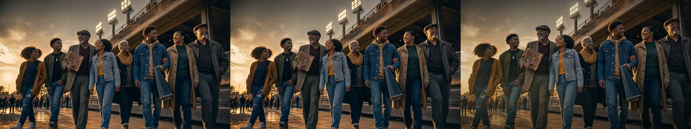
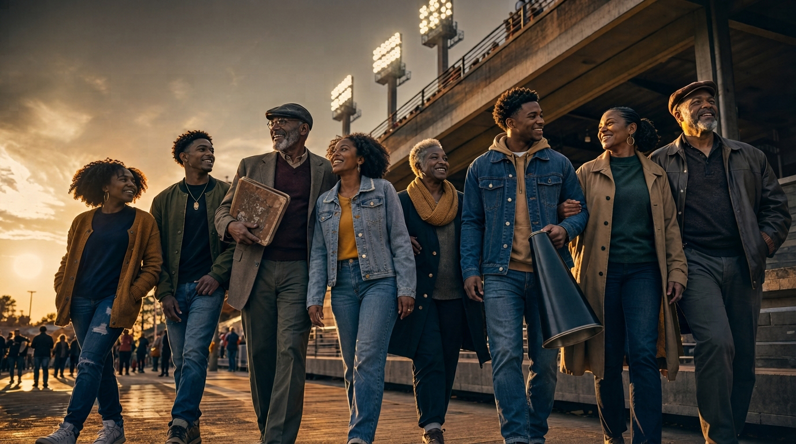

01 — Flash Lite source
Preserved untouchedOne Flash Lite recreation, kept intact. Every treatment is a sibling file—not a replacement. The current comparison is source → Photoshop finish → Remotion midpoint.

Preserved untouched
Curves · tone · grain · detailActual 4.05s H.264 render
Awaiting local bridge; spec included
Build script included; no render claimedRead the full evidence and settings in README.md and manifest.json.